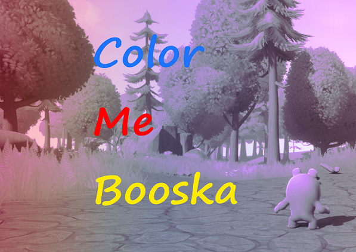
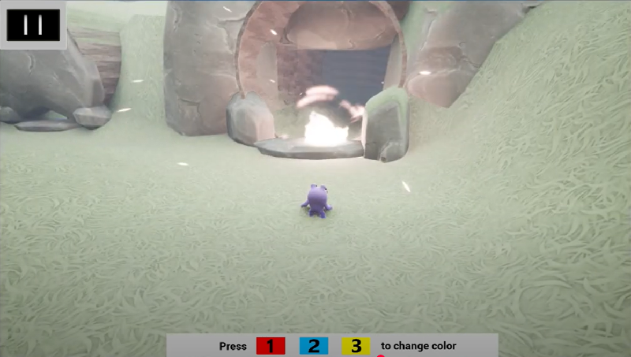
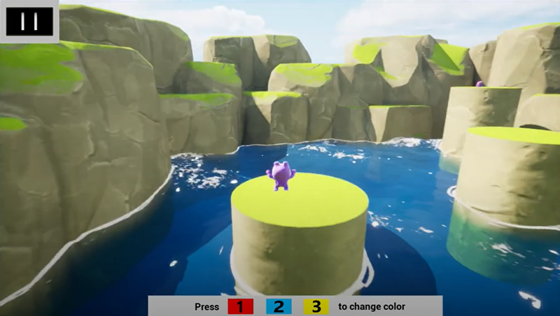

Color Me Booska
A color-shifting platformer created in 48 hours for a game jam. Watch the level's color change as you solve puzzles, open paths, and explore the vibrant level.
Watch on YouTube
Play it on itch.io



About This Project
Color Me Booska was developed as part of a game jam and focuses on color-based puzzle mechanics. Players take control of Booska, a color-swapping creature who must solve the puzzles in the environment to progress.
Features
- Color-based puzzle mechanics
- Multiple biomes and environmental challenges
- 3rd person controller with animated feedback
Built With
- Unreal Engine
- Blueprints
- Custom shaders + UI
Made for: Colors R Everything
(Epic Games Feature Jam)
Links
-
 Blink is a WIP
Blink is a WIP
-
 Itch.io
Itch.io
-
 N / A
N / A
-
 N / A
N / A
-
 N / A
N / A
-
 GitHub Repository
GitHub Repository
-
 OutBox Games Blog
OutBox Games Blog
-
 Trello Board
Trello Board